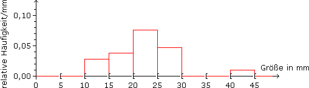
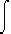
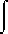
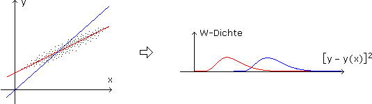
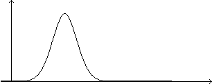
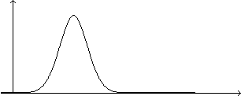

XVII. VERTEILUNGEN
A. Exkurs: Deskriptive Statistik
B. Zufallsvariable
C. Kennzahlen
D. Spezielle Verteilungen
E. Aufgaben zur Normalverteilung
 Ergänzungen und Details
Ergänzungen und DetailsWir haben eine Population von Merkmalsträgern, wobei es um ein quantitatives Merkmal gehen soll, d.h. die Merkmalsausprägungen sind Zahlen. Beispielsweise ein Aquarium mit einer Population von 21 Zierfischen, für deren Merkmal "Größe" folgende Werte (in mm) gemessen werden:
162023242627284113281913202327132320231619
In der deskriptiven Statistik geht es darum, solche Rohdaten zu komprimieren und zu veranschaulichen. Die Häufigkeitsverteilung fasst gleiche Merkmalsausprägungen zusammen und gibt ihre Anzahl als absolute Häufigkeit an, d.h. sie anonymisiert, ist aber ansonsten verlustfrei:
Eine verlustbehaftete Komprimierung ist das Histogramm: Dazu zerlegen wir die x-Achse in halboffene Intervalle, Klassen genannt, und darüber ziehen wir Rechtecke hoch, deren Fläche die Häufigkeit darstellt, mit der das Merkmal im jeweiligen Intervall liegt. Im Folgenden verwenden wir die relative Häufigkeit, das ist die absolute Häufigkeit als Prozentsatz der Population:

2 Median, Quartile und Boxplot
Die Komprimierung können wir noch weiter vorantreiben, bis hin zu "Kennzahlen":
• Wenn wir die Merkmalsausprägungen ansteigend anordnen und einen Teilungsstrich setzen, sodass gleich viele unter- und oberhalb davon liegen, ist der Median der Wert, auf dem der Teilungsstrich sitzt, bzw. das arithmetische Mittel der Werte, zwischen denen er sitzt. Das untere/obere Quartil ist der "Submedian" der Werte unter/oberhalb des Teilungsstrichs und der Interquartilsabstand ist ihr Abstand.
Achtung: Es gibt auch andere Quartildefinitionen! In der Praxis sind die Unterschiede bei größeren Datenmengen nicht relevant.
Aufgabe 1: Bestimme Median, Quartile und Interquartilsabstand für das Einführungsbeispiel.
131313161619192020202323232324262727282841
|
|
|
Q1 = = 17,5 mmMedian = 23 mmQ3 = = 26,5 mm
16+19
2
26+27
2
Q3–Q1 = 26,5–17,5 = 9 mm
• Der Tukey-Boxplot ist eine Box vom unteren zum oberen Quartil, innen mit dem Median als Querstrich. Außen fahren wir in beide Richtungen "Antennen" bis zum 1,5fachen Interquartilsabstand aus und ziehen sie dann ein, bis sie in einem tatsächlich beobachteten Wert enden. Noch weiter außen gelegene "Ausreißer" zeichnen wir separat ein:
3 Populationsmittel und -varianz
Xi sei die Ausprägung des Merkmals X beim i-ten von insgesamt n Merkmalsträgern und xj eine solche Ausprägung, der nach Zusammenfassung gleicher Ausprägungen die absolute Häufigkeit nj bzw. die relative Häufigkeit h(xj) zukommt. Median und Interqartilsabstand sind Kennzahlen für die Lage und Streuung der Merkmalsausprägungen, aber geläufiger sind in diesem Zusammenhang:
• Das Populationsmittel ist das arithmetische Mittel aller Merkmalsausprägungen.
μ :=  Xi = xjnj = xjh(xj)
Xi = xjnj = xjh(xj)
1
n
n
i=1
1
n
j
j
Bem: Wenn wir jede Merkmalsausprägung als Einheitsgewicht auf der x-Achse stapeln (siehe Bild ganz oben), dann entspricht das Populationsmittel gerade dem Schwerpunkt. Ausreißer können das Populationsmittel – anders als den Median – deutlich verschieben.
• Die Populationsvarianz ist das Mittel aller Abweichungsquadrate vom Populationsmittel, die -standardabweichung ist die Wurzel daraus.
σ2 := (Xi–μ)2 = (xj–μ)2nj = (xj–μ)2h(xj)
1
n
n
i=1
1
n
j
j
Bem: Die Quadrate verhindern, dass sich Abweichungen in entgegengesetzte Richtungen aufheben. Gegenüber Beträgen haben sie den Vorteil, dass sich damit "glatter" rechnet, aber den Nachteil, dass sich die Einheit ändert – daher die Standardabweichung.
Aufgabe 2: Bestimme Populationsmittel, -varianz und -standardabweichung für das Einführungsbeispiel.
μ = 13
3
21
2
21
σ2 = (13–22)2
3
21
2
21
σ = √40,57 = 6,37 mm
In der mathematischen Statistik werden wir mit Hilfe von Stichproben auf die Verteilung von Merkmalen in großen Populationen schließen (wo das Erfassen aller Merkmalsträger zu aufwendig wäre). Die Idee dahinter ist, dass die zufällige Auswahl eines Merkmalsträgers ein Zufallsexperiment ist, bei dem die Wahrscheinlichkeit für eine bestimmte Merkmalsausprägung gerade deren relativer Häufigkeit in der Population entspricht.
1 Diskrete und stetige Zufallsvariable
Eine Zufallsvariable ist eine Funktion bzw. das Zufallsexperiment mit "aufgesetzter" Funktion, die den Experimentausgängen Zahlen zuordnet. Wir unterscheiden Zufallsvariable danach, ob sich das Histogramm bei Verfeinerung der Klassen so oder so entwickelt:
• Eine diskrete Zufallsvariable X: Ω

 nimmt abzählbar viele Werte x1, x2,… an und wird durch die Wahrscheinlichkeitsfunktion
nimmt abzählbar viele Werte x1, x2,… an und wird durch die Wahrscheinlichkeitsfunktionf: {x1, x2,…}
[0, 1]charakterisiert, die jedem Wert die Wahrscheinlichkeit zuordnet, mit der die Zufallsvariable diesen Wert annimmt:
f(x) := P(X=x)
• Eine stetige Zufallsvariable X: Ω
nimmt überabzählbar viele Werte an und wird durch die (integrierbare) Dichtefunktionf:
+charakterisiert, deren Funktionskurve durch Verfeinerung der Histogramm-Klassen aus den Oberkanten der Rechtecke entsteht:
f(x) :=
lim
Δx—›0
P(x ≤ X ≤ x+Δx)
Δx
2 Verteilungs- und Quantilfunktion
• Die Verteilungsfunktion F(x) einer Zufallsvariablen X gibt die Wahrscheinlichkeit an, dass X einen Wert kleiner/gleich x annimmt:
| F(x) := P(X ≤ x) = |
xj≤x
–∞x f(t)dt, im stetigen Fall
|
Damit lässt sich die Wahrscheinlichkeit, dass X einen Wert in einem bestimmten Bereich annimmt, so berechnen:
| P(xi ≤ X ≤ xj) = |

|
F(xj) – F(xi–1), im diskreten Fall bei ansteigend geordneten x1,x2,…
F(xj) – F(xi),im stetigen Fall
|
• Das α-Quantil x = F–1(α) bzw. – falls so nicht existent – ein Teilungstrich auf der x-Achse, sodass P(X ≤ x) ≥ α und P(X ≥ x) ≥ 1–α.
Aufgabe 3: Bestimme a) die Verteilungsfunktion F(x) und damit die Wahrscheinlichkeit P(2 ≤ X ≤ 8), b) die Quantilfunktion F–1(α) und damit das 0,90-Quantil einer stetigen Zufallsvariablen X mit Dichtefunktion
f(x) =
1
x2 + π2
a) F(x) = –∞x f(t)dt = –∞x dt = (*)
1
t2 + π2
b)
1
π
x
π
 x = πtan(α–0,5)π = F–1(α)
x = πtan(α–0,5)π = F–1(α)F–1(0,9) = πtan(0,9–0,5)π = 9,67
3 Mehrdimensionale Zufallsvariable
Eine n-dimensionale Zufallsvariable ordnet jedem Experimentausgang ein n-Tupel zu. Dessen Komponenten beziehen sich auf bestimme Aspekte des Experimentausgangs (etwa Größe X und Gewicht Y eines zufällig ausgewählten Objekts) und sind auch für sich gesehen Zufallsvariable, aber bei der mehrdimensionalen Zufallsvariable geht es um gemeinsam beobachtete Werte.
Aufgabe 4: Ein gepunkteter Sektor belegt 30% einer Scheibe, ein schraffierter 40% und der Bereich, wo sich beide überdecken, a) 12%, b) 15%. Ein in der Scheibenmitte gelagerter Pfeil wird in Drehung versetzt. Sobald er wieder steht, wird geschaut, worauf er zeigt:
Illustriere die Wahrscheinlichkeitsverteilung von (X,Y) über ein 3D-Histogramm und die von X+Y über ein 2D-Histogramm.
| X = gepunktet? |

|
1 = ja 0 = nein |
Y = schraffiert? |
|
1 = ja 0 = nein |
Illustriere die Wahrscheinlichkeitsverteilung von (X,Y) über ein 3D-Histogramm und die von X+Y über ein 2D-Histogramm.
Bei stetigen Zufallsvariablen (X,Y) entsteht durch Verfeinerung der 3D-Histogramm-Klassen aus den Deckflächen der Quader das Funktionsgebirge der Dichtefunktion f(x,y). Aus der Wahrscheinlichkeits/Dichtefunktion f(x,y) können wir die sogenannten Randverteilungen herausrechnen, die sich ergeben würden, wenn wir nur x-Werte bzw. nur y-Werte beobachten:
| f1(x) = |
j
–∞∞ f(x,y)dy, im stetigen Fall
|
bzw. f2(y) = |
j
–∞∞ f(x,y)dx, im stetigen Fall
|
4 Unabhängige Zufallsvariable
• Die Komponenten X und Y einer Zufallsvariablen (X,Y) heißen unabhängig, wenn X-Ereignisse (wo im Rahmen des Gesamtexperiments nur auf den x-Wert des Ausgangs geschaut wird) und Y-Ereignisse (wo …) immer unabhängig sind. Was gleichbedeutend damit ist, dass
f(x,y) = f1(x)f2(y)
Aufgabe 5: Übeprüfe, ob X und Y in Aufgabe 4 unabhängig sind.
a) X und Y sind unabhängig, weil
P(X=0)P(Y=0) = 0,70·0,60 = 0,42 = P(X=0,Y=0)
Der Rest folgt dann automatisch, weil Ereignisse, die voneinander unabhängig sind, auch von den jeweiligen Gegenereignissen unabhängig sind:
P(X=1)P(Y=0) = 0,30·0,60 = 0,18 = P(X=1,Y=0)
P(X=0)P(Y=1) = 0,70·0,40 = 0,28 = P(X=0,Y=1)
P(X=1)P(Y=1) = 0,30·0,40 = 0,12 = P(X=1,Y=1)
b) X und Y sind nicht unabhängig, weil
P(X=0)P(Y=0) = 0,42 ≠ 0,45 = P(X=0, Y=0).
Wir übernehmen die oben eingeführten Populationskennzahlen, indem wir "relative Häufigkeit" durch "Wahrscheinlichkeit" ersetzen.
1 Erwartungswert
• Der Erwartungswert einer Zufallsvariablen X ist die Summe der mit ihrer Wahrscheinlichkeit gewichteten x-Werte.
| E(X) = μ := |
 j
–∞∞ xf(x)dx, im stetigen Fall
|
Wenn wir eine Zufallsvariable X über eine Funktion h:
weiterverarbeiten, ist das Ganze wieder eine Zufallsvariable mit| E(hoX) = |
j
–∞∞ h(x)f(x)dx, im stetigen Fall
|
Warum?
ykP(hoX=yk) = yk[f(xi) + f(xj)] = h(xi)f(xi) + h(xj)f(xj)
Analog, wenn wir die Komponenten X, Y einer Zufallsvariablen (X, Y) über eine Funktion h:
x zusammenrechnen:| E[ho(X,Y)] = |
j k
–∞∞–∞∞ h(x,y)f(x,y)dydx, im stetigen Fall
|
Die folgenden Eigenschaften des Erwartungswerts gelten für diskrete und stetige Zufallsvariable, wir leiten sie aber nur im letzten Fall her:
•

•
• X, Y unabhängig
2 Varianz und Standardabweichung
• Die Varianz einer Zufallsvariablen X ist der Erwartungswert der Zufallsvariablen (X–μ)2, die Standardabweichung ist die Wurzel daraus.
| Var(X) = σ2 := E[(X – μ)2] = |
j
–∞∞ (x–μ)2f(x)dx, im stetigen Fall
|
Eigenschaften der Varianz:
• Var(a + bX) = E[(a/ + bX – a/ – bμ)2] = b2E[(X – μ)2] = b2Var(X)
• X, Y unabhängig Var(X + Y) = E[(X + Y – μx – μy)2] = E[(X – μx)2] + 2E[(X – μx)(Y – μy)] + E[(Y – μy)2] = Var(X) + Var(Y)
Var(X + Y) = E[(X + Y – μx – μy)2] = E[(X – μx)2] + 2E[(X – μx)(Y – μy)] + E[(Y – μy)2] = Var(X) + Var(Y)3 Kovarianz und Korrelation
• Die Kovarianz einer zweidimensionalen Zufallsvariablen (X, Y) ist der Erwartungswert der Zufallsvariablen (X – μx)(Y – μy).
| Cov(X, Y) = σxy := E[(X–μx)(Y–μy)] = |
j k
–∞∞–∞∞ (x–μx)(y–μy)f(x,y)dydx, im stet. Fall
|
Was Kovarianz bedeutet, machen wir uns über folgende Bilder klar, in denen die Wahrscheinlichkeit als Punktedichte dargestellt ist:
Bei positiver Kovarianz haben wir die Tendenz, kleine x-Werte gemeinsam mit kleinen y-Werten zu beobachten und große x-Werte gemeinsam mit großen y-Werten. Bei negativer Kovarianz ist es andersrum. In Bild c) verschwindet die Kovarianz.
Der Betrag der Kovarianz ist umso größer, je mehr die Punktewolke einem Geradenstück ähnelt und je "medianer" und ausgedehnter dieses ist. Wenn wir Letzteres herausrechnen, bleibt ein Maß für die Stärke des linearen Zusammenhangs von X und Y:
• Der Korrelationskoeffizient einer zweidimensionalen Zufallsvariablen (X, Y) ist die auf den Wertebereich [–1, 1] normierte Kovarianz.
ρ :=
σxy
σxσy
Bei ρ = 0 heißen X und Y unkorreliert, was bedeutet, dass die Punktewolke in ihrer Gesamtheit weder steigende noch fallende Tendenz hat. Diese nimmt zu, je mehr sich ρ den Extremen ±1 nähert, wo die Punktewolke ihre Flächigkeit verliert und auf einer steigenden/fallenden Geraden liegt.
4 Lineare Regression
Der Korrelationskoeffizient sagt nur, wie stark die Punktewolke einer Geraden ähnelt, aber nicht welcher. Dafür suchen wir unter allen Geraden
Y(X) = α + βX
die Regressionsgerade von Y auf X, das ist diejenige, für die die vertikalen Abweichungsquadrate [Y–Y(X)]2 minimal sind.

Soll heißen, unter allen Zufallsvariablen
(Y – α – βX)2 =
[(Y – μy) – β(X – μx) + (μy – βμx – α)]2 =
(Y – μy)2 + β2(X – μx)2 + (μy – βμx – α)2 – 2β(X – μx)(Y – μy) + 2(Y – μy)(μy – βμx – α) – 2β(X – μx)(μy – βμx – α)
suchen wir diejenige mit dem kleinsten Erwartungswert:
E[(Y – α – βX)2] = σy2 + β2σx2 + (μy – βμx – α)2 – 2βσxy = min!
(1)
∂(…)
∂α
(2) = 2βσx2 + 2(μy – βμx – α)(–μx) – 2σxy = 0
∂(…)
∂β
Laut (1) geht die Gerade durch (μx, μy) und verschwindet der mittlere Summand in (2). Das ergibt die Steigung
βy(x) =
σxy
σx2
Aufgabe 6: Gegeben sind die Punkte (1|5), (3|2), (8|1) im kartesischen Koordinatensystem. a) Bestimme diejenige (Ausgleichs)Gerade, bei der die Summe ihrer vertikalen Abstandsquadrate zu den gegebenen Punkten minimal ist. b) Betrachte die gegebenen Punkte als Population und benutze obige Formeln für (X,Y) = Koordinaten eines zufällig aus dieser Population ausgewählten Punktes.
a) y(x) = a+bx
q(a,b) = [5 – y(1)]2 + [2 – y(3)]2 + [1 – y(8)]2 = (5 – a – b)2 + (2 – a – 3b)2 + (1 – a – 8b)2
(1)
∂q
∂a
(2) = 2/(5 – a – b)(–1) + 2/(2 – a – 3b)(–3) + 2/(1 – a – 8b)(–8) = 0
∂q
∂b
(1) 3a + 12b = 8
(2) 12a + 74b = 19
 a = 4,6, b = –0,5
a = 4,6, b = –0,5
b) Y(X) = α+βX
μx = xjf1(xj) = xi = 12 = 4
j
1
n
n
i=1
1
3
μy = yjf2yj) = yi = 8 = 2,6
j
1
n
n
i=1
1
3
σx2 = (xj – μx)2f1(xj) = (xi – μx)2 = 26
j
1
n
n
i=1
1
3
σy2 = (yj – μy)2f2(yj) = (yi – μy)2 = 8,6
j
1
n
n
i=1
1
3
σxy = (xj – μx)(yk – μy)f(xj,yk) = (xi – μx)(yi – μy) = (–13)
j
k
1
n
n
i=1
1
3
β =
σxy
σx2
α = μy – βμx = 4,6Analog zur Regression von Y auf X ist unter allen Geraden
X(Y) =
Y – α
β
die Regressionsgerade von X auf Y diejenige, für die die horizontalen Abweichungsquadrate [X–X(Y)]2 minimal sind.
Auch diese Gerade geht durch (μx, μy). Sie hat die Steigung
βx(y) =
σy2
σxy
Je mehr die Punktewolke einer Geraden ähnelt, umso geschlossener ist die "Schere" der beiden Regressionsgeraden. Ein Maß dafür ist
βy(x)
βx(y)
σxy2
σx2σy2
1)
Aufgabe 7: Wie groß ist das Bestimmtheitsmaß in der vorigen Aufgabe?
ρ2 =
σxy2
σx2σy2
Wir haben ein Gesamtexperiment, bei dem dasselbe Einzelexperiment unabhängig voneinander n-mal ausgeführt wird, und uns interessiert, wie oft dabei ein bestimmtes Ereignis A eintritt. Ausgehend von einer auf das Einzelexperiment aufsetzenden Zufallsvariablen
| X· = A eingetreten? |
|
1 = ja (Wahrscheinlichkeit p) 0 = nein (Wahrscheinlichkeit q) |
bzw. den unabhängigen X·i, die auf das Gesamtexperiment aufsetzen und den X·-Wert der i-ten Ausführung annehmen, heißt das:
X = X·1 + … + X·n (wie oft A eintritt) =: n-p-binomialverteilt
Ein Baumdiagramm des Gesamtexperiments hat n-teilige Pfade aus p-Zweigen und q-Zweigen. Das Ereignis X=k besteht aus soviel Pfaden, wie es Möglichkeiten gibt, k Positionen aus n auszuwählen, um sie zu p-Zweigen zu machen (den Rest bilden dann q-Zweige):
Erwartungswert und Varianz der Binomialverteilung:
E(X·) = 0·q + 1·p = p
E(X) = E(X·1) + … + E(X·n) = npVar(X·) = (0–p)2q + (1–p)2p = p2q + q2p = pq
Var(X) = Var(X·1) + … + Var(X·n) = npq
Xi unabhängig
Bem: Somit hat die relative Häufigkeit h(A) = X/n als Zufallsvariable den Erwartungswert p und die Varianz pq/n, die mit zunehmendem n gegen 0 läuft. Das ist nichts anderes als das Gesetz der großen Zahlen in neuem Gewand.
Aufgabe 8: Ein Spieler wettet gegen die Bank, dass er mit 2 Würfeln eine zweistellige Augenzahl wirft. Falls er gewinnt, wird der vierfache Einsatz ausbezahlt und der Einsatz rückerstattet. Gespielt wird 25-mal. a) Wie groß ist die Wahrscheinlichkeit, dass er mindestens 3-mal gewinnt? b) Wie groß ist der Erwartungswert der Spielerbilanz, wenn der Einsatz 1 EUR beträgt?
| X· = Augenzahl zweistellig? |
|
1 = ja (Wahrscheinlichkeit p) 0 = nein (Wahrscheinlichkeit q) |
p =
|{(4,6), (5,5), (5,6), (6,4), (6,5), (6,6)}|
|{(1,1), … (6,6)}|
6
36
1
6
a) X = X·1 + … + X·25 (Anzahl gewonnener Wetten) = binomialverteilt
b) E(5X – 25) = 5E(X) – 25 = 5·25
1
6
2 Standardnormalverteilung
Eine Zufallsvariable X standardisieren heißt, den Erwartungswert subtrahieren und anschließend durch die Standardabweichung dividieren. Das Ganze ist dann wieder eine Zufallsvariable mit Erwartungswert 0 und Standardabweichung 1. Für den n-maligen Münzwurf und das binomialverteilte X = "Anzahl Kopf" schaut das so aus:
Mit zunehmendem n rücken die Werte der Zufallsvariablen auf der x-Achse immer näher zusammen und die Oberkanten der Rechtecke laufen gegen die Gauß'sche Glockenkurve, wie die Dichtefunktion der Standardnormalverteilung N(0;1) heißt:
Zentraler Grenzwertsatz: Dass wir auf dem Weg zur Standardnormalverteilung vom einfachsten aller Zufallsexperimente ausgegangen sind, ist bei näherer Betrachtung nicht entscheidend, da die standardisierte Summe jeder Verteilung mit zunehmender Summandenzahl dorthin läuft.
3 Allgemeine Normalverteilung
Die Standardnormalverteilung ist erst der Rohstoff, der durch Skalieren/Verschieben so verallgemeinert wird, dass er reale Situationen widerspiegelt (nicht anders wie bei den elementaren Funktionen ex und sinx).
• Z = N(0;1)
X = μ + σZ =: N(μ;σ) verteilt mit E(X) = μ und Var(X) = σ2
Aufgabe 9: Ergänze die folgende Glockenkurve durch eine weitere, bei der μ und σ größer sind.


Größeres μ bedeutet, dass die Glocke nach rechts wandert. Größeres σ, dass die Flanken flacher sind und die Haube tiefer liegt, da die Fläche unter Dichtefunktionen immer 1 ist.
Normalverteilungen bleiben normalverteilt, wenn sie linear transformiert oder summiert werden:
• X = N(μ;σ) verteilt
a + bX = N(a+bμ;|b|σ) verteilt• Xi = N(μi;σi) verteilt und unabhängig
X1 + X2 = N(μ1+μ2;√σ12+σ22) verteilt
Aufgabe 10: Der in einer Tablette enthaltene Wirkstoff ist normalverteilt mit μ = 25 mg und σ = 1,5 mg. Wie groß ist die Wahrscheinlichkeit, dass eine Tablette a) zwischen 25,9 mg und 28 mg, b) mehr als 23,8 mg Wirkstoff enthält? c) Wie groß ist δ, wenn in 80% aller Fälle die Wirkstoffmenge im Bereich μ ± δ liegt?
X = Wirkstoffmenge in mg/Tablette = N(25;1,5) verteilt
2 Lineartransformation, Summe
Aufgabe 11: Der jährliche Stromverbrauch von Haushalt1 ist normalverteilt mit μ1 = 1680 kWh und σ1 = 100 kWh, der Grundpreis ist 75 EUR pro Jahr, der Arbeitspreis 0,20 EUR pro kWh. Für Haushalt2 gilt: μ2 = 1650 kWh, σ2 = 150 kWh, Grundpreis = 120 EUR, Arbeitspreis = 0,18 EUR. Wie groß ist die Wahrscheinlichkeit, dass die Stromkosten eines Jahres für Haushalt1 geringer sind als für Haushalt2?
X1 = Stromverbrauch1 in kWh/Jahr = N(1680;100) verteilt
X2 = Stromverbrauch2 in kWh/Jahr = N(1650;150) verteilt
Y1 = Stromkosten1 in EUR/Jahr = 75 + 0,20X1 = N(75+0,20μ1 = 411; 0,20σ1 = 20) verteilt
Y2 = Stromkosten2 in EUR/Jahr = 120 + 0,18X2 = N(120+0,18μ2 = 417; 0,18σ2 =27) verteilt
Z = Y1 – Y2 = Y1 + (–1)Y2 = N(411+(–1)417 = –6; √202+272 = 33,6) verteilt
P(–∞ < Z < 0) = P
= Φ(0,18) – Φ(–∞) = 0,57
–∞ < <
Z – (–6)
33,6
0 – (–6)
33,6
3 Approximation der Binomialverteilung
Aufgabe 12: Die Wahrscheinlichkeit, dass eine Muschel mit eingeimpftem Nukleus eine Perle produziert, liegt bei 10%. Bestimme näherungsweise über die Normalverteilung die Anzahl der Muscheln, aus denen man mit 95% Wahrscheinlichkeit mehr als 20 Perlen gewinnt.
| X· = Perle? |
|
1 = ja (Wahrscheinlichkeit p = 0,10) 0 = nein (Wahrscheinlichkeit q = 0,90) |
X = X·1 + … + X·n (Anzahl Perlen) = n-p-binomialverteilt ≈ N(np;√npq) verteilt
0,95 = P(20 < X < ∞) = P
< < ∞
= Φ(∞) – Φ
20 – 0,1n
0,3√n
X – 0,1n
0,3√n
20 – 0,1n
0,3√n
Φ
= 0,05 Φ–1(.)
20 – 0,1n
0,3√n
20 – 0,1n
0,3√n
0,1u2 – 0,4935u – 20 = 0 u1,2 = –11,89  16,82
16,82
u1,2 = 0,4935 ± √(–0,4935)2 – 4·0,1·(–20)
2·0,1
–11,89 16,82
n = u2 = 283
Genaugenommen ist diese Approximation erst ab einem Stichprobenumfang mit npq ≥ 9 zulässig: 283·0,10·0,90 = 25,5